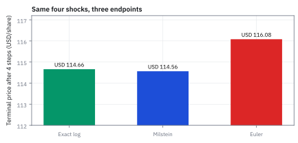
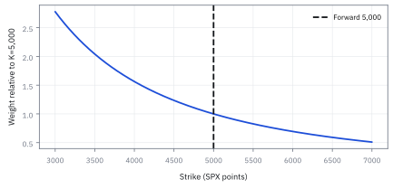
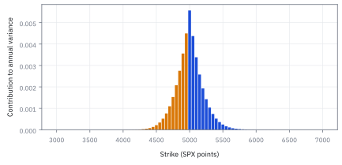

13.8 Simulating Stochastic Differential Equations — Euler, Milstein, and Exact Schemes
แยกความคลาดเคลื่อนจากการสุ่มออกจากความคลาดเคลื่อนของช่วงเวลา
หุ้น \$100 ตัวเดิมจากหัวข้อ 13.2 (drift 12% volatility 28%) จำลองหนึ่งปีเป็น 4 ก้าว ด้วยตัวเลขสุ่มชุดเดียวกัน 0.5, −1.2, 0.8, 0.3 สูตรง่ายที่สุดคลาดจากค่าจริงเท่าไร สูตรที่ดีกว่าคลาดเท่าไร?
เฉลย: ค่าจริงคือ \$114.66 สูตร Euler ได้ \$116.08 สูงไป 1.24% สูตร Milstein ได้ \$114.56 ต่ำไปแค่ 0.085% แม่นกว่า 14.7 เท่า และ confidence interval ที่แคบแค่ไหนก็จับความคลาดนี้ไม่ได้ เพราะมันมาจากการซอยเวลา ไม่ใช่จากจำนวนเส้นทาง
หัวข้อนี้สร้างสามสูตรจำลองจาก Itô's lemma แล้ววัดความคลาดเคลื่อนสองชนิดแยกกัน
เริ่มจากความคลาดที่ confidence interval จับไม่ได้
หุ้น \$100 ตัวเดิมจากหัวข้อ 13.2 จำลองหนึ่งปีด้วย 4 ก้าว ใช้ตัวเลขสุ่มชุดเดียวกันคือ 0.5, −1.2, 0.8 และ 0.3 ค่าจริงของราคาปลายทางคือ \$114.66
สูตรที่ง่ายที่สุดให้ \$116.08 สูงไป 1.24% สูตรที่ดีกว่าอีกนิดให้ \$114.56 ต่ำไปแค่ 0.085% แม่นกว่ากัน 14.7 เท่า ทั้งที่ใช้เลขสุ่มชุดเดียวกันเป๊ะ
ประเด็นที่สำคัญกว่าคือความคลาดชนิดนี้ไม่ได้มาจากจำนวนเส้นทางที่สุ่ม มันมาจากการซอยเวลา เพิ่มจำนวนเส้นทางอีกล้านเส้นก็ไม่หาย และ confidence interval ที่รายงานกันก็จับมันไม่ได้เลย หัวข้อนี้แยกความคลาดสองชนิดนั้นออกจากกัน
ศัพท์ที่ใช้ในหัวข้อนี้
- Euler–Maruyama scheme
- สูตรเดินทีละขั้นที่ตรึง drift และขนาดแรงสุ่มไว้ที่ค่าต้นก้าว ใช้จำลองสมการแบบสุ่มทุกชนิดด้วยโค้ดที่ง่ายที่สุด
- Milstein scheme
- สูตรเดินทีละขั้นที่เติมพจน์แก้เมื่อขนาดแรงสุ่มเปลี่ยนตามระดับ ใช้ลดความคลาดของเส้นทางเดี่ยว
- exact scheme
- สูตรที่สุ่มจากการกระจายจริงของแบบจำลองในแต่ละก้าว ใช้ตัดความคลาดจากการซอยเวลาทิ้งเมื่อมีคำตอบแบบปิด
- sampling error
- ความคลาดจากจำนวนเส้นทางที่มีจำกัด ใช้รายงานเป็น standard error และลดลงเมื่อเพิ่มจำนวนเส้นทาง
- discretization bias
- ความคลาดเชิงระบบจากการแทนเวลาต่อเนื่องด้วยก้าวยาวจำกัด ใช้ตรวจด้วยการซอยก้าวถี่ขึ้น และไม่หายเมื่อเพิ่มเส้นทางอย่างเดียว
- strong convergence
- การที่เส้นทางที่จำลองเข้าใกล้เส้นทางจริงเมื่อใช้ตัวเลขสุ่มชุดเดียวกัน ใช้ตรวจงานที่ต้องตามเส้นทาง เช่นความไวที่คิดจากการจับคู่เส้นทาง
- weak convergence
- การที่ค่าเฉลี่ยของสิ่งที่สนใจเข้าใกล้ค่าจริง โดยไม่ต้องตามเส้นทางทุกจุด ใช้ประเมินความคลาดของราคาจาก Monte Carlo
- common random numbers
- การใช้ตัวเลขสุ่มชุดเดียวกันกับทุกสูตรที่เทียบกัน ใช้ให้ความต่างที่เห็นมาจากสูตร ไม่ใช่จากโชค
- path-dependent payoff
- เงินที่จ่ายขึ้นกับสิ่งที่เกิดระหว่างทาง ไม่ใช่แค่ราคาตอนจบ เช่น Asian, barrier และ lookback ใช้ตัดสินว่าต้องจำลองทีละขั้น
- Brownian bridge
- การสุ่มว่าเส้นทางระหว่างต้นก้าวกับปลายก้าวที่รู้ค่าแล้วแตะระดับหนึ่งหรือไม่ ใช้ตรวจ barrier ระหว่างก้าวโดยไม่ต้องซอยถี่มาก
- Geometric Brownian Motion (GBM)
- แบบจำลองราคาที่แรงสุ่มโตตามราคาและมีคำตอบแบบปิด (หัวข้อ 13.2) ใช้เป็นสนามทดสอบที่รู้คำตอบจริง
- Cox–Ingersoll–Ross (CIR) model
- แบบจำลองดอกเบี้ยที่แรงสุ่มแปรตามรากที่สองของระดับ (หัวข้อ 13.4) ใช้เป็นตัวอย่างที่ต้องกันค่าไม่ให้ติดลบตอนจำลอง
สัญลักษณ์ที่ใช้ในหัวข้อนี้
| สัญลักษณ์ | ความหมาย | หน่วย |
|---|---|---|
| $X_k$ | ค่าที่จำลองได้ ณ ก้าวที่ $k$ | หน่วยของตัวแปร |
| $a(X_k)$, $b(X_k)$ | drift และขนาดแรงสุ่ม ณ ต้นก้าว | หน่วย/ปี, หน่วย/$\sqrt{\text{year}}$ |
| $b'(X_k)$ | อัตราที่ขนาดแรงสุ่มเปลี่ยนเมื่อระดับขยับ | $1/\sqrt{\text{year}}$ |
| $\Delta t$ | ความยาวหนึ่งก้าว | ปี |
| $\Delta W_k$ | การขยับของ Brownian motion ในก้าวที่ $k$ | $\sqrt{\text{year}}$ |
| $Z_k$ | ตัวเลขสุ่มจากระฆังมาตรฐาน แต่ละก้าวไม่เกี่ยวกัน | ไม่มีหน่วย |
| $S_k^E$, $S_k^M$, $S_k^X$ | ราคาจาก Euler, Milstein และสูตรจริง | USD/หุ้น |
| $\mu$, $\sigma$ | drift และความผันผวนต่อปี | 1/ปี, $1/\sqrt{\text{year}}$ |
| $p_s$, $p_w$ | อันดับความแม่นแบบเส้นทาง และแบบค่าเฉลี่ย | ไม่มีหน่วย |
| $\mathbb E_k[\cdot]$ | ค่าเฉลี่ยเมื่อรู้ทุกอย่างถึงต้นก้าวที่ $k$ | หน่วยของตัวข้างใน |
ขั้นที่ 1 — นิยามของก้อนสุ่มในโค้ด: คูณด้วยรากของความยาวก้าว
บรรทัดนี้เป็นนิยามของวิธีสร้างการขยับในโปรแกรม variance ของการขยับต้องเท่ากับความยาวก้าว ตามหัวข้อ 13.1 จึงคูณก้อนมาตรฐานด้วยรากของก้าว
ถ้าเผลอคูณด้วยความยาวก้าวแทนราก ความผันผวนที่จำลองได้จะเล็กเกินไปมากเมื่อก้าวเล็ก และผลทั้งหมดจะผิดทั้งที่กราฟยังดูสมเหตุสมผล ตัวเลขสุ่มสี่ตัวนี้ใช้ร่วมกันทุกสูตรในหัวข้อนี้
ขั้นที่ 2 — นิยามของ Euler–Maruyama: ตรึงทุกอย่างไว้ที่ต้นก้าว
บรรทัดนี้เป็นนิยามของวิธีที่เลือก อ่าน drift และขนาดแรงสุ่มที่ต้นก้าว แล้วถือว่าคงที่ตลอดก้าว อ่านที่ต้นก้าวด้วยเหตุผลเดียวกับหัวข้อ 13.3 คือห้ามรู้อนาคต
ก้าวใหม่เท่ากับค่าเดิม บวกส่วนที่คาดได้คูณความยาวก้าว บวกขนาดแรงสุ่มคูณการขยับ ราคาของการตรึงไว้ทั้งก้าวคือสิ่งที่ขั้นถัดไปคำนวณ
ขั้นที่ 3 — พจน์แก้ของ Milstein: ขนาดแรงสุ่มเปลี่ยนระหว่างก้าว
Euler ละเลยว่าขนาดแรงสุ่มเปลี่ยนตามค่าที่ขยับระหว่างก้าว กระจาย Taylor หนึ่งพจน์ แทนส่วนสุ่มของการขยับ แล้วใช้ integral ที่หัวข้อ 13.3 คำนวณไว้
ส่วน drift ของการขยับระหว่างก้าวเล็กกว่าอีกขั้นจึงทิ้งได้ integral บรรทัดที่หกถึงเจ็ดคือ ½(W² − T) ของหัวข้อ 13.3 ในก้าวเดียว พจน์ที่หักความยาวก้าวออกทำให้ค่าเฉลี่ยของพจน์แก้เป็นศูนย์ พจน์นี้ทำให้เส้นทางตรงขึ้นโดยไม่ย้ายค่าเฉลี่ย
ขั้นที่ 4 — สามสูตรสำหรับ GBM
ขนาดแรงสุ่มของ GBM คือ σS อัตราที่มันเปลี่ยนตามราคาคือ σ พจน์แก้จึงเป็น $\tfrac12\sigma^2S\big((\Delta W)^2-\Delta t\big)$ และ GBM มีสูตรจริงให้เทียบจากหัวข้อ 13.2
สองสูตรแรกคูณราคาด้วยตัวคูณที่เป็นเส้นตรงของการขยับ สูตรที่สามใช้ exponential ซึ่งไม่มีวันติดลบ ขั้นถัดไปแสดงว่าสามสูตรนี้คือ Taylor ของสูตรที่สามที่ตัดคนละที่
ขั้นที่ 5 — สามสูตรคือ Taylor ของสูตรจริงที่ตัดคนละที่
ตั้งชื่อเลขชี้กำลังของสูตรจริงว่า u แล้วกระจาย $e^u$ ถึงพจน์กำลังสอง กำลังสองของการขยับมีขนาดเท่าความยาวก้าว จึงเก็บไว้
−½σ²Δt จาก drift ของ log รวมกับ +½σ²ΔW² จากกำลังสอง ได้พจน์แก้ของ Milstein พอดี Euler คือการตัดพจน์นี้ทิ้ง Milstein จึงเป็นสูตรจริงที่ตัดช้ากว่าหนึ่งขั้น
ตารางเดินสี่ก้าว: ตัวเลขสุ่มชุดเดียวกัน สามสูตร
| ก้าวที่ $k$ | $\Delta W_k$ | Euler $S^E$ | Milstein $S^M$ | สูตรจริง $S^X$ |
|---|---|---|---|---|
| เริ่ม | — | 100.0000 | 100.0000 | 100.0000 |
| 1 | +0.25 | 110.0000 | 109.2650 | 109.4393 |
| 2 | −0.60 | 94.8200 | 94.6576 | 94.4027 |
| 3 | +0.40 | 108.2844 | 107.7650 | 107.7453 |
| 4 | +0.15 | 116.0809 | 114.5630 | 114.6599 |
ก้าวแรกของ Euler คือ 100(1 + 0.03 + 0.07) = 110 ของ Milstein บวก 0.0392(0.0625 − 0.25) = −0.00735 ได้ 109.265 ของสูตรจริงคือ $100e^{0.0202+0.07}$ ได้ 109.4393
ขั้นที่ 6 — ความคลาดของสองสูตรบนเส้นทางนี้
อ่านแถวสุดท้ายของตารางแล้ววัดว่าแต่ละสูตรพลาดไปกี่เปอร์เซ็นต์เทียบกับสูตรจริง
Milstein แม่นกว่าราว 14.7 เท่าบนตัวเลขชุดเดียวกัน ด้วยงานเพิ่มแค่พจน์เดียวต่อก้าว ความต่างสะสมมาจากทุกก้าว ไม่ได้เกิดที่ก้าวสุดท้ายก้าวเดียว
Figure 13.8a — แรงสุ่มชุดเดียวกัน แต่ได้ปลายทางสามแบบ

บนสี่ก้าว Milstein เกือบทับสูตรจริง ขณะที่ Euler สูงกว่า 1.24% การเทียบนี้ใช้ตัวเลขสุ่มชุดเดียวกัน จึงอ่านความคลาดได้ตรง
ขั้นที่ 7 — ทำไม Euler สูงไป 1.24%: ผลรวมกำลังสองของเส้นทางนี้น้อยกว่าหนึ่งปี
เทียบ log ของผลคูณตัวคูณ Euler กับ log ของสูตรจริง แล้วใช้ ln(1 + x) ≈ x − x²/2 ดูว่าส่วนต่างมาจากไหน
log ของตัวคูณ Euler หัก ½σ² คูณกำลังสองของการขยับที่เกิดจริง แต่สูตรจริงหัก ½σ² คูณเวลาเต็ม เส้นทางนี้มีผลรวมกำลังสอง 0.605 น้อยกว่าหนึ่งปี Euler จึงหักน้อยไป ค่าประมาณอันดับสองได้ 0.0155 พจน์ที่เหลือหักลงจนเหลือ 0.0123 พอดี
ขั้นที่ 8 — นิยามของความแม่นสองแบบ: วัดคนละอย่าง
สองก้อนนี้เป็นนิยาม แบบแรกวัดว่าเส้นทางที่จำลองห่างจากเส้นทางจริงเท่าไรเมื่อใช้ตัวเลขสุ่มชุดเดียวกัน แบบที่สองวัดแค่ว่าค่าเฉลี่ยของสิ่งที่สนใจเพี้ยนไปเท่าไร ซึ่งเป็นสิ่งที่การตั้งราคาต้องการ
ตัวเลขชี้กำลังบอกว่าความคลาดหดเร็วแค่ไหนเมื่อซอยก้าว ถ้าเป็น 1 ซอยถี่ขึ้นสองเท่า ความคลาดหดครึ่งหนึ่ง ถ้าเป็นครึ่งหนึ่ง ต้องซอยถี่ขึ้นสี่เท่า ผลจากเส้นทางเดียวจึงสรุปอะไรไม่ได้ ต้องรันหลายขนาดก้าวแล้วดูอัตราการหด
ขั้นที่ 9 — ทำไม Euler แม่นแบบค่าเฉลี่ยดีกว่าแบบเส้นทาง
พจน์ที่ Euler ทิ้งไปคือพจน์แก้ของ Milstein ดูค่าเฉลี่ยของมันเมื่อรู้ทุกอย่างถึงต้นก้าว และขนาดของมันบนเส้นทางเดี่ยว
พจน์ที่ทิ้งไปเฉลี่ยศูนย์ทุกก้าว ความคลาดเหล่านี้จึงหักล้างกันเมื่อเฉลี่ยหลายเส้นทาง แต่บนเส้นทางเดียวมันสะสมแบบรากที่สองของจำนวนก้าว ได้ความคลาดขนาดรากของ Δt ความคลาดของค่าเฉลี่ยที่เหลือมาจากพจน์ที่เล็กกว่า จึงหดตาม Δt
ขั้นที่ 10 — อันดับมาตรฐานของสองสูตร
ผลของขั้นที่ 9 เขียนเป็นตัวเลขอันดับ สำหรับแบบจำลองที่ drift และแรงสุ่มเรียบ และมีแรงสุ่มแหล่งเดียว
Milstein ยกความแม่นของเส้นทางจากครึ่งหนึ่งเป็นหนึ่ง แต่ความแม่นของค่าเฉลี่ยเท่ากัน ถ้าต้องการแค่ราคา option ธรรมดา Euler ก็พอ เงินที่จ่ายที่หักมุม เช่น digital อาจทำให้อัตราที่เห็นจริงช้ากว่านี้
Figure 13.8b — ความชันของ strong order

บนแกน log ทั้งสองแกน ความคลาดของ Euler ลดช้ากว่า Milstein ลดก้าวลง 4 เท่า ความคลาดของ Euler ลดราว 2 เท่า แต่ของ Milstein ลดราว 4 เท่า
ขั้นที่ 11 — เมื่อไร Euler ให้ราคาติดลบ
ตัวคูณของ Euler เป็นเส้นตรงของการขยับ จึงติดลบได้เมื่อการขยับลบมากพอ แก้หาเกณฑ์ แล้วแทนตัวเลขของโจทย์
σ√Δt เป็นบวก จึงหารได้โดยไม่กลับทิศ ในโจทย์นี้ต้องได้ก้อนมาตรฐานต่ำกว่า −7.36 ซึ่งแทบไม่เกิด สูตรจริงไม่มีปัญหานี้เลยเพราะ exponential เป็นบวกเสมอ
ขั้นที่ 12 — กรณีเครียด: volatility 80% ก้าวละหนึ่งปี
หุ้นเล็กหรือสินทรัพย์ที่เหวี่ยงแรงจำลองด้วยก้าวหยาบ ใช้เกณฑ์เดิมกับ σ = 0.80 และ Δt = 1
ราวหนึ่งในสิบสองเส้นทางได้ราคาติดลบ เงินที่จ่าย log ราคา และรากของราคาพังทั้งชุด วิธีแก้ตามลำดับความถูกต้อง: ใช้สูตรจริงถ้ามี ถ้าไม่มีให้จำลอง log ราคาด้วย Euler แทนราคาดิบ หรือซอยก้าวถี่ขึ้น
ขั้นที่ 13 — เมื่อแรงสุ่มไม่ขึ้นกับระดับ Milstein เท่ากับ Euler
พจน์แก้ของ Milstein มี b′ คูณอยู่ ถ้าขนาดแรงสุ่มคงที่ เช่น Vasicek ของหัวข้อ 13.4 พจน์แก้หายไป
สองสูตรให้ตัวเลขเดียวกันทุกก้าว แต่ไม่ได้แปลว่าเท่ากับคำตอบจริง Euler ยังคลาดจาก drift ที่ขึ้นกับระดับ สำหรับ Vasicek ควรใช้คำตอบแบบปิดของหัวข้อ 13.4 สุ่มทีละขั้นแทน ซึ่งไม่มีความคลาดจากการซอยเวลาเลย
เลือกวิธีตามชนิดของแบบจำลองและเงินที่จ่าย
| สถานการณ์ | วิธีที่ควรใช้ | เหตุผล |
|---|---|---|
| GBM และเงินที่จ่ายขึ้นกับราคาตอนจบเท่านั้น | สูตรจริงก้าวเดียวถึงวันครบกำหนด | ไม่มีความคลาดจากการซอยเวลา และเร็วที่สุด |
| GBM และเงินที่จ่ายขึ้นกับเส้นทาง | สูตรจริงทีละขั้น และ Brownian bridge ถ้ามี barrier | ต้องรู้ค่าระหว่างทาง แต่แต่ละก้าวยังไม่มีความคลาด |
| ไม่มีสูตรปิด แรงสุ่มขึ้นกับระดับ | Milstein หรือ Euler บน log ของตัวแปร | ลดความคลาดของเส้นทาง และกันค่าติดลบ |
| CIR หรือตัวแปรที่ต้องไม่ติดลบ | สุ่มจากการกระจายจริง หรือ Euler ที่ตัดค่าติดลบเป็นศูนย์ก่อนหารากที่สอง | Euler ธรรมดาทำให้รากของค่าติดลบพัง |
ความผิดที่พบบ่อยที่สุดในโค้ดตั้งราคาคือใช้ Euler กับราคาดิบทั้งที่มีสูตรจริงให้ใช้
Figure 13.8c — งบความคลาดสองก้อน

เพิ่มจำนวนเส้นทางลดความคลาดจากการสุ่ม แต่ความคลาดจากการซอยเวลาเท่าเดิม การซอยก้าวถี่ขึ้นจึงต้องตรวจแยกจาก confidence interval
คำตอบ ตรวจเอง และแปลว่าอะไร
โจทย์ให้อะไรมาบ้าง: หุ้น \$100 drift 12% volatility 28% สี่ก้าว ก้าวละ 0.25 ปี ตัวเลขสุ่ม 0.5, −1.2, 0.8, 0.3
คำตอบ: (ก) สูตรจริง \$114.6599 Milstein \$114.5630 Euler \$116.0809 (ข) Euler คลาด +1.239% Milstein คลาด −0.085% แม่นกว่าราว 14.7 เท่า (ค) Euler ติดลบเมื่อก้อนมาตรฐานต่ำกว่า −7.36 ในโจทย์นี้ แต่ที่ volatility 80% ก้าวละปี เกิด 8.08% (ง) GBM กับเงินที่จ่ายตอนจบ ใช้สูตรจริงก้าวเดียว
ตรวจเองใน 10 วินาที: 1.421 หาร 114.66 ได้ราว 1.24% และ 0.0969 หาร 114.66 ได้ราว 0.085%
แปลว่าอะไร: ทุกตัวเลขจาก Monte Carlo มีความคลาดสองก้อนที่ต้องรายงานแยก ก้อนจากจำนวนเส้นทาง และก้อนจากการซอยเวลา ก้อนหลังตรวจได้ด้วยการรันสองขนาดก้าวด้วยตัวเลขสุ่มชุดเดิม
อ่านผลจากหลายเส้นทาง
เมื่อมีหลายเส้นทาง เราสรุปค่าเฉลี่ยและความไม่แน่นอนด้วย Monte Carlo ได้ รายละเอียดเรื่องการสรุปผลและ bootstrap จะเรียนอย่างเป็นระบบในหัวข้อ 17.5 หัวข้อนี้สนใจเฉพาะความคลาดจากการซอยเวลา
กับดัก: เปลี่ยนตัวเลขสุ่มตอนเทียบสูตร และเรียก Euler กับแรงสุ่มคงที่ว่าแม่นตรง
ถ้าใช้ตัวเลขสุ่มชุดใหม่ตอนเทียบสองสูตร ความต่างที่เห็นจะปนโชคจนอ่านไม่ออก ต้องใช้ common random numbers เสมอ อีกข้อคือ Milstein กับ Euler เท่ากันเมื่อแรงสุ่มคงที่ตามขั้นที่ 13 แต่สองวิธีอาจผิดเหมือนกันได้ การที่สองสูตรตรงกันจึงไม่ใช่หลักฐานว่าตรงกับคำตอบจริง
ที่มาที่ไป: จาก Euler (1768) สู่ Maruyama (1955) และ Milstein (1974)
ปี 1768 Leonhard Euler เดินสมการที่ไม่สุ่มตามเส้นสัมผัสทีละขั้น ปี 1955 Gisiro Maruyama ขยายวิธีนี้ไปสมการสุ่มโดยบวกการขยับของ Brownian motion เข้าไป แต่ความแม่นของเส้นทางตกลงครึ่งหนึ่ง จะลดความคลาดลงครึ่งหนึ่งต้องซอยก้าวถี่ขึ้น 4 เท่า
ปี 1974 Grigori Milstein เติมพจน์แก้จาก Taylor แบบสุ่ม ความแม่นของเส้นทางกลับมาเท่าวิธีเดิมของ Euler ในแบบจำลองหลายตัวแปร พจน์แก้ของ Milstein ซับซ้อนมาก Euler จึงยังเป็นเครื่องมือหลักเมื่อมีตัวแปรหลายตัว สูตรปิดใช้ได้กับแบบจำลองไม่กี่ตัว ที่เหลือต้องจำลองทั้งหมด
ข้อจำกัด: วิธีนี้สมมติอะไร และของจริงเป็นอย่างไร
| เรื่อง | วิธีนี้สมมติว่า | ของจริงเป็นอย่างไร | ผลที่ตามมาเวลาใช้งาน |
|---|---|---|---|
| ขนาดก้าว | ยิ่งซอยถี่ยิ่งแม่น | จริง แต่งานคำนวณโตตามจำนวนก้าว | ต้องแลกระหว่างความแม่นกับเวลาที่ใช้ ซึ่งมีจุดที่เหมาะที่สุด |
| ค่าที่เป็นไปได้ | วิธีง่าย ๆ ให้ค่าที่สมเหตุสมผล | วิธีง่าย ๆ ทำให้ราคาติดลบได้ | ต้องมีมาตรการกันไว้ ไม่งั้นผลจำลองจะมีเส้นทางที่เป็นไปไม่ได้ปนอยู่ |
| ชนิดของความแม่น | แม่นแบบเดียว | ความแม่นของเส้นทางเดี่ยวกับของค่าเฉลี่ยเป็นคนละเรื่อง | การเลือกวิธีขึ้นกับว่าต้องการอะไร ถ้าต้องการแค่ค่าเฉลี่ย วิธีง่ายก็พอ |
แถวล่างเป็นเรื่องที่คนมองข้ามบ่อย และทำให้เลือกวิธีที่แพงเกินความจำเป็น
แล้วเอาไปใช้ทำอะไรได้จริงบ้าง
ใช้จำลองราคาเพื่อตั้งราคา derivative ที่ไม่มีสูตรปิด ซึ่งเป็นสัญญาส่วนใหญ่ที่ซื้อขายจริง และใช้ทดสอบความเสี่ยงโดยสุ่มเส้นทางจำนวนมากแล้วดูผลที่แย่ที่สุด
ใช้ตัดสินว่าคุ้มจะเขียนสูตรที่แม่นกว่าหรือไม่ ซึ่งคุ้มเมื่อก้าวยาวความผันผวนสูง หรือต้องการความแม่นของเส้นทางเดี่ยว
โค้ดเทียบ Euler, Milstein และสูตรจริงบนเส้นทางเดียวกัน
import numpy as np
from math import exp, log
from statistics import NormalDist
mu, sig, dt, S0 = 0.12, 0.28, 0.25, 100.0
dW = np.sqrt(dt) * np.array([0.5, -1.2, 0.8, 0.3])
assert np.allclose(dW, [0.25, -0.60, 0.40, 0.15])
E = M = X = S0
for w in dW:
E *= 1 + mu * dt + sig * w
M *= 1 + mu * dt + sig * w + 0.5 * sig ** 2 * (w * w - dt)
X *= exp((mu - 0.5 * sig ** 2) * dt + sig * w)
assert abs(E - 116.0809) < 5e-4 and abs(M - 114.5630) < 5e-4 and abs(X - 114.6599) < 5e-4
assert abs((E - X) / X - 0.01239) < 5e-5 and abs((M - X) / X + 0.00085) < 1e-5
assert abs(np.log(1 + mu * dt + sig * dW).sum() - 0.14911) < 5e-5 and abs(log(X / S0) - 0.1368) < 5e-5
assert abs(0.5 * sig ** 2 * (1 - (dW ** 2).sum()) - 0.0155) < 5e-5
assert abs((1 + mu * dt) / (sig * np.sqrt(dt)) - 7.36) < 5e-3 and abs(NormalDist().cdf(-1.12 / 0.80) - 0.0808) < 5e-5
rng = np.random.default_rng(21)
def errs(n, paths=20_000):
inc = rng.standard_normal((paths, n)) * np.sqrt(1 / n)
e = m = np.full(paths, S0)
for k in range(n):
w = inc[:, k]
e = e * (1 + mu / n + sig * w)
m = m * (1 + mu / n + sig * w + 0.5 * sig ** 2 * (w * w - 1 / n))
x = S0 * np.exp(mu - 0.5 * sig ** 2 + sig * inc.sum(1))
return np.abs(e - x).mean(), np.abs(m - x).mean()
e8, m8 = errs(8); e32, m32 = errs(32)
assert 1.5 < e8 / e32 < 2.6 and 3.0 < m8 / m32 < 5.5 # strong orders 1/2 and 1โค้ดเดินสี่ก้าวด้วยเลขสุ่มชุดเดียวกันได้ Euler สูงไป 1.239% Milstein ต่ำไปเพียง 0.085% ตรวจว่าส่วนต่างมาจากผลรวมกำลังสองที่น้อยกว่าหนึ่งปี และลดขนาดก้าวลงสี่เท่าแล้ว error ของ Euler ลดราวสองเท่า ของ Milstein ลดราวสี่เท่า
สรุปที่ใช้ได้จริง
- การขยับในโค้ดคือรากของความยาวก้าวคูณก้อนมาตรฐาน ใช้ความยาวก้าวคูณแทนทำให้ความผันผวนพัง
- Euler และ Milstein คือ Taylor ของสูตรจริงที่ตัดคนละที่ พจน์แก้ของ Milstein คือ ½bb′ คูณ (ΔW² − Δt)
- หุ้น \$100 สี่ก้าว: สูตรจริง \$114.66 Euler +1.24% Milstein −0.085% ความคลาดของ Euler มาจากผลรวมกำลังสอง 0.605 ที่น้อยกว่าหนึ่งปี
- Euler แม่นแบบเส้นทางอันดับครึ่งหนึ่ง แบบค่าเฉลี่ยอันดับหนึ่ง Milstein แม่นแบบเส้นทางอันดับหนึ่ง
- รายงานความคลาดจากการสุ่มและจากการซอยเวลาแยกกัน และใช้ตัวเลขสุ่มชุดเดียวกันเมื่อเทียบสูตร